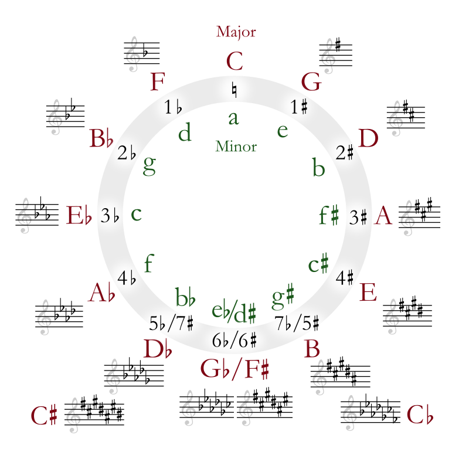

Author: 伍々慧, 1=bE, 试听: 这里
下图为 Circle of Fifths 的完整谱号记录

参考: 五线谱调号的识别
bE调的音阶为
b3 4 5 b6 b7 1 2
对应的 C 小调 的音阶为
1 2 b3 4 5 b6 b7
但是该部分并未用的是 bE/c 相关的和弦, 因为加了变调夹夹在第三品, 所以使用的还是 C/a 相关的和弦,
其中有 a -> A 的转变, 所以用到了一些 A 大调(6 #7 #1 2 3 #4 #5 6)的中 #4, #5的一些音符.
1 INTRO-1
Fmaj7 -> Edim7 -> Dm7 -> E7 -> Am
级数走向
IVmaj7 -> IIIdim7 -> IIm7 -> III7 -> VIm7
1.1 Fmaj7 Edim7
FMaj7: 4 1 3 6
Edim7: 3 b7 b2 5
1.2 Dm7 E7 Am
Dm7: 2 6 1 4
E7: 3 7 2 #5
Am: 6 6 1 3 6
2 INTRO-2
Am, Am/E -> Bm6(no5), E7(no5) -> F, F/C -> E
根音走向为: 6 -> 3, 7 -> 3, 4 -> 1, 3
2.1 Bm6(no5) E
Bm6(no5): 7 2 #5 2
该和弦也可以认为是 E7/B, 个人觉得音乐的魅力就在这里, 虽说看似都是简单的套路走向,
但是一点点变化音, 转位, 就会让音乐整体变得丰富.
E7(no5): 3 2 #5 2
2.2 F F/C E
F: 4 6 1
F/C: 1 4 6 1
3 Part A
Dm7 -> G7 -> C -> C -> Bdim7/D -> E -> Am Dm7 -> G7 -> C -> C -> Bdim7 -> E -> Am
和弦形式不再展示, 但是比较有意思的是这几点:
3.1 bE
G7 的部分有一个 bE 的经过音
bE 不在 A大调的旋律音(6 #7 #1 2 3 #4 #5 6)中, 但是她作为一个经过音
G7 C 4 -> 3 -> b3 -> 3
该方式在 押尾桑的黄昏 也有应用
3.2 C
在C为根音的旋律为
6 #5 6 7 1 #1 2
该部分可以作为一个结束的旋律
4 Part B
G -> C -> G -> E7 -> Am -> F -> Fm6(no5) -> E -> Am -> Dm7 -> E7 -> E7(Solo) -> F, E
Part B 的和弦走向不是很清晰, 但是觉得是围绕 E7, 值得一提的是E7的一个旋律走向.
4.1 Fm6(no5)
Fm6(no5): 4 4 b6 2
4.2 E7
第48小节有一个E7的solo.
E7: 3 #5 2 #5 7
5 Part C
Part C 和 INTRO-1 的走向是一致的.
Fmaj7 -> Edim7 -> Dm7 -> E7 -> Am
6 Part D
Dm7/A -> E/#G -> Asus4 -> E7/D
6.1 E7/D
在 E7/D 中, 有一个旋律音
1 7 6 #5 4 3 2 1 7 6 #5 #4 3
以后学习了各种音阶之后再进行分析
7 Part E
Part E 和 Part C 走向一致.
8 END
重复 INTRO-2
9 总结
容易弹错的几个小节
9.1 E7
E7的solo 最后的7的声音太大了
7 | 3 #5 7 2 3 #5 | 7 2 3 #5 7 1 | 7
实际为变调夹三品, 真实的音为 G7
2 | 5 7 2 4 5 7 | 2 4 5 7 2 b3 | 2
9.2 F
F: 4 4 6 6
变调夹三品的实际音为:
#G: #5 #5 #7 #7
10 曲谱
完整曲谱下载: 这里